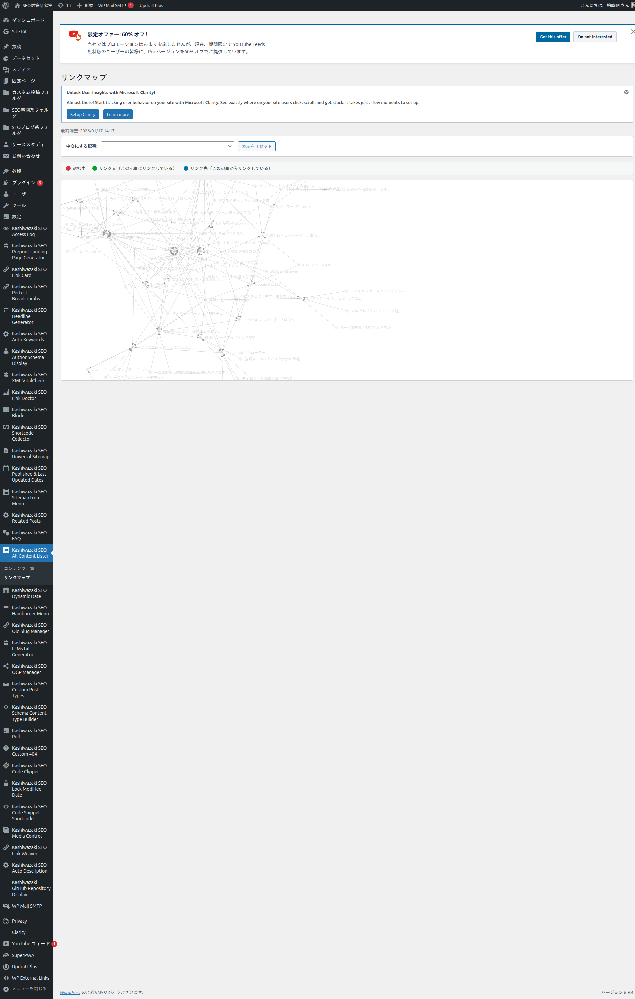
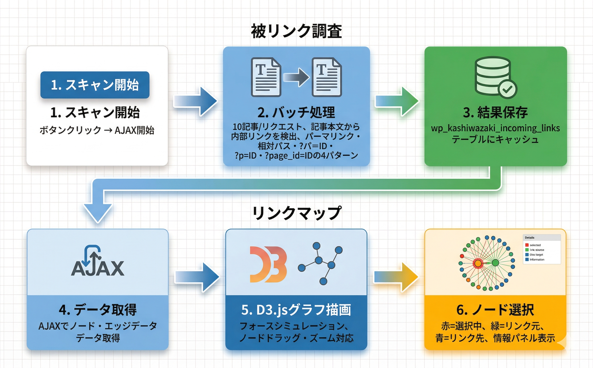

被リンク調査・リンクマップ
サイト内の全記事をスキャンして内部リンク構造を分析し、D3.jsのフォースグラフで可視化します。
被リンク調査（スキャン）
コンテンツ一覧画面の「被リンクを調査する」ボタンから、サイト内の全記事をバッチスキャンして内部リンク数を集計します。
1
「コンテンツ一覧」ページを開く
2
「被リンクを調査する」ボタンをクリック
3
プログレスバーが表示され、10記事ずつバッチ処理が実行される
4
スキャン完了後、ページが自動リロードされ「被リンク数」列に結果が表示される
注意
記事数が多いサイトではスキャンに時間がかかる場合があります。スキャン中はページを閉じないでください。
備考
スキャン結果はカスタムテーブル（wp_kashiwazaki_incoming_links）にキャッシュされます。再スキャンすると結果が更新されます。
検出するリンクパターン
| パターン | 説明 | 例 |
|---|---|---|
| パーマリンク | フルURLのhref属性 | href="https://example.com/post-slug/" |
| 相対パス | サイト内の相対パス | href="/post-slug/" |
| ?p=ID | 投稿IDパラメータ | href="?p=123" |
| ?page_id=ID | 固定ページIDパラメータ | href="?page_id=456" |
リンクマップ
D3.jsのフォースグラフで内部リンク構造を視覚化します。ノードが記事、エッジがリンク関係を表します。
1
管理画面左メニュー「Kashiwazaki SEO All Content Lister」→「リンクマップ」をクリック
2
グラフが自動的にロードされ、全記事のリンク関係が表示される
3
「中心にする記事」ドロップダウンから記事を選択すると、その記事を中心にグラフがズームされる

ノードの色と意味
| 色 | 意味 |
|---|---|
| 赤 | 選択中の記事（中心ノード） |
| 緑 | リンク元（選択記事にリンクしている記事） |
| 青 | リンク先（選択記事からリンクしている記事） |
| グレー | その他の記事 |
ヒント
ノードをドラッグして配置を変更できます。マウスホイールでズーム、ドラッグでパン操作が可能です。
情報パネル
記事を選択すると右側に情報パネルが表示され、以下の情報が確認できます。
- 記事タイトル（編集画面へのリンク付き）
- リンク元の記事一覧（この記事にリンクしている記事）
- リンク先の記事一覧（この記事からリンクしている記事）
